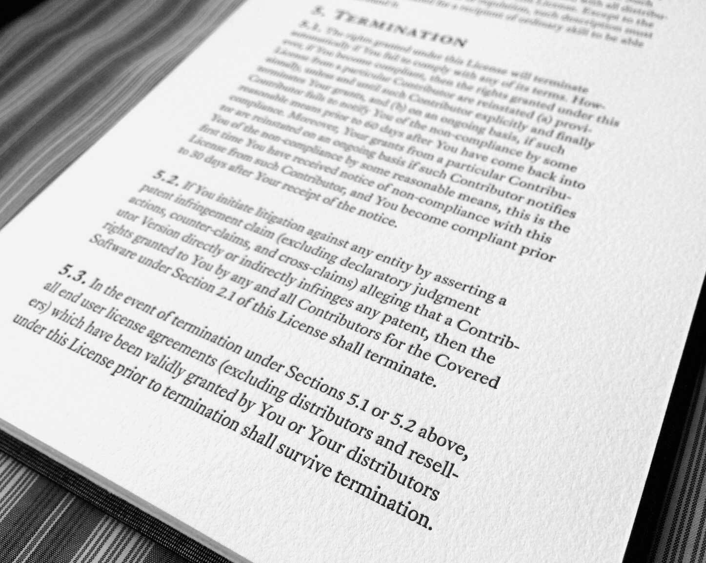

Fonts are only one ingredient of typography. And messing around with the font menu on your computer isn’t a substitute for knowing the fundamentals of type composition and text formatting. That’s why this chapter appears in the middle of the book, not the beginning.
But we’ve covered that, right? So here’s the secret sauce: If you want the fastest, easiest and most obvious upgrade to your typography, nothing beats a professional font.
As a designer of professional fonts—including the ones used in this book—am I biased? Of course. But no one has seriously disputed that it’s true.
If you consider the alternatives in this chapter and still prefer Times New Roman or other system fonts, I won’t think less of you. I’ll even concede that there are situations, like emails and draft documents, where system fonts are your best option.
But in general, for writers who care about typography, professional fonts are essential tools.
- font basics
- Equity
- Valkyrie
- Century Supra
- Concourse
- Hermes Maia
- Heliotrope
- Triplicate
- Advocate
- Arial alternatives
- Helvetica alternatives
- Times New Roman alternatives
- A brief history of Times New Roman
- Courier alternatives
- Palatino alternatives
- Baskerville alternatives
- Century Schoolbook alternatives
- Georgia alternatives
- Verdana alternatives
- Gill Sans alternatives
- Cambria alternatives
- Calibri alternatives